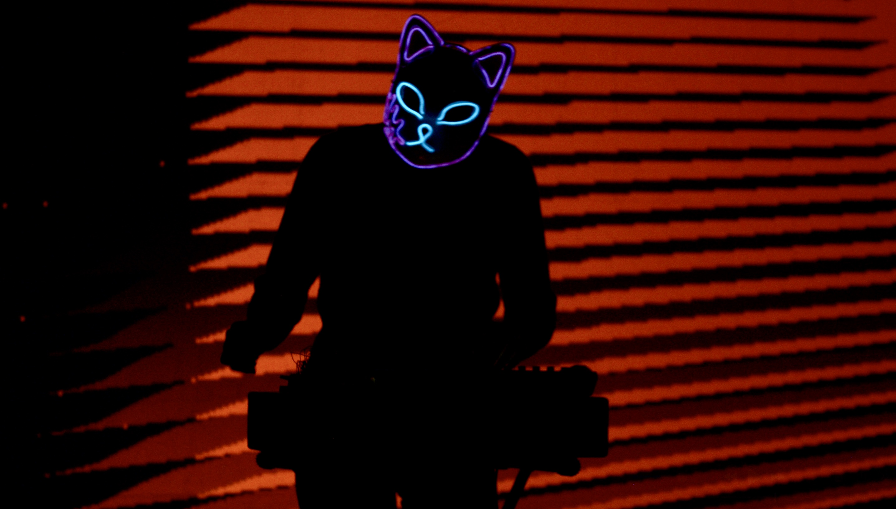

Il Teatro delle Volpi al Neon
Una performance per raggiungere l'invisibilità
Invisibilità digitale
Viviamo in un’epoca in cui la visibilità è la valuta che più ci vincola. Alcuni algoritmi sono programmati per estrarre valore da ogni nostro gesto, catalogandoci in un sistema che riduce l’essere umano a un profilo commerciale composto di dati “estratti” dal nostro quotidiano muoverci nell’infrastruttura digitale.
Nelle performance del Teatro delle Volpi al Neon, l’arte decide di scomparire. I corpi, le ombre, i suoni cessano di essere identificabili sfuggendo alle trame della leggibilità.
Le persone scompaiono per diventare presenze, i singoli frammenti musicali si fondono in un continuo sonoro indecifrabile.
La danza stessa è una dissonanza, non un messaggio, ma un rumore — un disturbo che destabilizza l’infrastruttura.
Ogni performance delle Volpi è un’anomalia statistica non computabile.
Un segnale decifrabile è un segnale sfruttabile
Essere visibili, oggi, significa rinunciare a essere liberi.
Con ogni gesto e con ogni suono, il Teatro delle Volpi al Neon evoca un territorio di incomprensibilità.
Quella delle volpi è una performance che esplora il margine, lo spazio dove il significato evapora.
Il movimento dei corpi, segmentato e privo di schema, e i suoni scuri e non lineari, si affermano come frammenti di un linguaggio opaco, non catalogabile.
Gli spiriti delle volpi mutaforma diventano pura anomalia, un rumore che non risponde alle aspettative di riconoscimento della macchina, una frattura nell’infrastruttura che misura e controlla.
I corpi dietro le maschere al neon diventano statistica imprecisa, eccedenza, frammento illeggibile, il loro rumore non è un errore, ma una zona franca, un luogo dove l’arte si sottrae al dominio della visibilità.

Il dispositivo dell’anonimato: la maschera
Nell’era della sorveglianza onnipresente, il volto è ridotto a un’identità decifrabile, una firma biometrica che ci colloca e ci definisce.
Le maschere indossate nel Teatro delle Volpi al Neon non sono semplici costumi, sono dispositivi di resistenza, atti di scomparsa.
Scegliendo l’anonimato come forma di autonomia, le Volpi al Neon diventano presenze inafferrabili, opache, portatrici di un'identità che non può essere ridotta a un insieme di dati.
La maschera non cela, ma elimina. È una cancellazione dell’individualità in favore di una collettività indistinta, che si muove in uno spazio sottratto alla riconoscibilità e alla profilazione.
I corpi e i suoni non offrono narrazioni, sfuggendo ad ogni struttura, si trasformano in ombre pronte a scomparire nell’uragano di dati.
L’invisibilità nel rumore statistico.

La materia del suono – resistenza e dissonanza
Nel Teatro delle Volpi al Neon il suono non è un segnale ma un’interferenza.
In un’epoca che misura ogni vibrazione, ogni frequenza, e la traduce in codice, le volpi scolpiscono il suono come una sorta di nebbia digitale, una presenza che, anziché rivelare, nasconde.
Il flusso che ne risulta è una stratificazione di dissonanze che non suggerisce né direzione né significato; è pura materia sonora che oppone resistenza alla decodifica.
Nella stratificazione del continuo i suoni perdono la loro leggibilità, diventando massa percepibile ma indistinguibile.
È così che la performance si configura come uno spazio d’insubordinazione.
Il Corpo opaco
Nelle società contemporanee, il corpo è sempre più un oggetto misurabile.
La vita viene codificata in pattern prevedibili e manipolabili.
Il corpo si fa dato, questa riduzione non solo sottrae complessità alla corporeità, ma la ingloba in una logica economica di sfruttamento e controllo.
Nel Teatro delle Volpi al Neon il corpo è frammentato e non si offre come oggetto estetico o narrativo, ma si manifesta come un’alterità.
Quella delle Volpi è una critica performativa al sistema di sorveglianza, un gesto di sottrazione che produce opacità laddove si richiede trasparenza.

L’Ombra come linguaggio – l’impronta di un passaggio
Cosa ci resta una volta che l’identità è cancellata?
Il Teatro delle Volpi al Neon fa dell’ombra il suo mezzo espressivo, il suo linguaggio.
Le ombre, che emergono dal flusso di dati, non sono semplici duplicati, ma impronte di un passaggio.
L’ombra è memoria dell’assenza, una traccia impalpabile che non si offre alla decodifica.
Ogni performer è una figura senza identità, come un ricordo impossibile da afferrare.

La nebbia sonora e l’anomalia percettiva (parte1)
Il suono viene trattato come un’informazione pura, trasformata in dati, segmenti e segnali facilmente decifrabili.
Nelle performance del Teatro delle Volpi al Neon, il suono si oppone all’analisi algoritmica, diventando barriera.
Il suono è ostacolo, qualcosa che confonde e disturba gli schemi di comprensione.
La nebbia sonora e l’anomalia percettiva (parte2)
La stratificazione sonora non segue nessuna melodia o pattern ritmico.
Le frequenze si sovrappongono, creando una nebbia sonica di alta o bassa densità.
Il suono diventa esperienza sensoriale, avvolgendo pubblico e performer in uno spazio insondabile.

Il Teatro delle Volpi al Neon
Il Teatro delle Volpi al Neon agisce sulla stratificazione di piani di opacità.
L’opacità è politica ed estetica, creando uno spazio libero dalla sorveglianza.
I corpi e i suoni si dissolvono, si frammentano e si oppongono.
In un mondo ossessionato dalla visibilità, questa performance rivendica il diritto di scomparire.